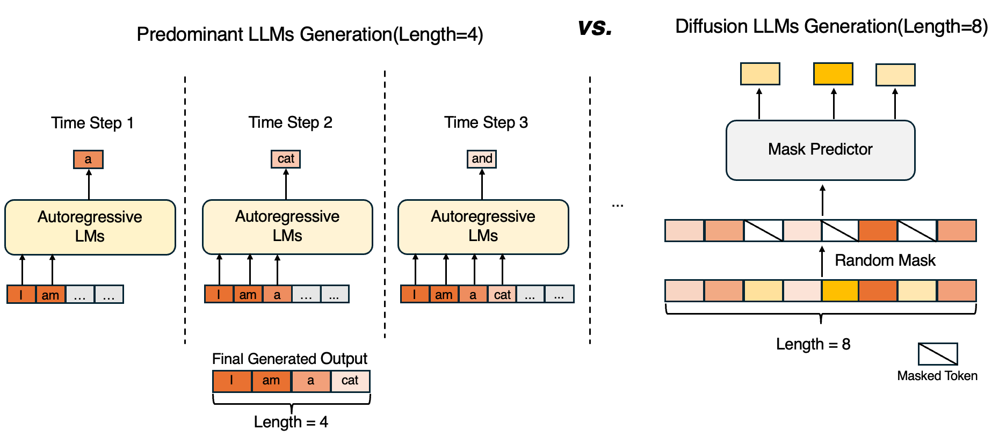
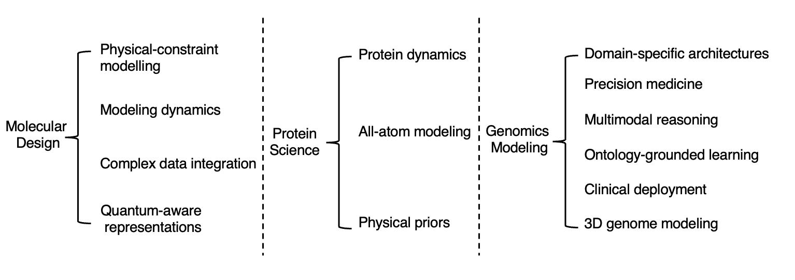

Abstract
Recent advances in artificial intelligence (AI), especially large language models, have accelerated the integration of multimodal data in scientific research. Given that scientific fields involve diverse data types, ranging from text and images to complex biological sequences, graphs, and structures, multimodal large language models (MLLMs) have emerged as powerful tools to bridge these modalities, enabling more comprehensive data analysis and intelligent decision-making. This work, \(\text{S}^3-\text{Bench}\), provides a comprehensive overview of recent advances in MLLMs, focusing on their diverse applications across science. We systematically review the progress of MLLMs in key scientific domains, including drug discovery, molecular & protein design, materials science, and genomics. The work highlights model architectures, domain-specific adaptations, benchmark datasets, and promising future directions. More importantly, we benchmarked open-source MLLMs on a range of critical molecular and protein property prediction tasks. Our work aims to serve as a valuable resource for both researchers and practitioners interested in the rapidly evolving landscape of multimodal AI for science.
Background and Coverage of our Survey
- Figure (a) presents an overview of our \(\text{S}^3-\text{Bench}\), highlighting four major components discussed in the paper and presenting the key modalities and their corresponding applications.
- Figure (b) shows the average monthly number of MLLM-related publications across four domains from 2022 to September 2025.
- Figure (c) compares the coverage of recent representative survey papers on LLMs/MLLMs across different domains in science, showing that our survey is the most comprehensive one so far

Summary of Models across Covered Domains
In each domain-specific section, we organize MLLMs according to their targeted applications or tasks. Within each category, we provide a detailed analysis of the model architectures, the fundamental challenges they address, and the corresponding solutions implemented. The following three figures show MLLMs in Science and Drug Design, Protein Science, Genomics and Material Science. We make categorization of applications accordingly and summarize representative models along three dimensions — publication time, model size, and architectural design.
 ❯
❯
Summary of Datasets across Covered Domains
Pre-training and instruction-tuning datasets in the molecular, protein, and gene domains, including their modality types, data sources, and applicable tasks.
 ❯
❯
Downstream task datasets in the molecule, protein, and gene domains, detailing their modalities, data sources, and corresponding links, as well as the specific applicable tasks.
❯
Hot Topics and Future Direction
Hot topics of MLLMs Applications and emerging hot topics.
- We showcase the applications of MLLMs within biomedicine, a domain where the analyses of molecules, proteins, genes, and cells play a central role.
- We highlight the rise of diffusion large language models (dLLMs) enabling more flexible cross-modal reasoning and structured generation and illustrate how diffusion-based approaches are shaping the future landscape of language and multimodal modeling.

A comparison of autoregressive and diffusion-based generation paradigms
Future Directions.
We identify future directions that can be broadly categorized into domain-specific challenges and cross-disciplinary opportunities.

overview of the key future directions proposed in our work
BibTeX
@inproceedings{
yan2025a,
title={A Comprehensive Survey of Multimodal {LLM}s for Scientific Discovery},
author={Liang Yan and Xu Jiang and Jian Ma and Yuhang Liu and Tian Bian and Qichao Wang and Abhishek Basu and Yu Rong and Tingyang Xu and Pengcheng Wu and Le Song and Imran Razzak and Junchi Yan and Zengfeng Huang and Yutong Xie},
booktitle={1st Workshop on VLM4RWD @ NeurIPS 2025},
year={2025},
url={https://openreview.net/forum?id=HSz1Kr5BeC}
}